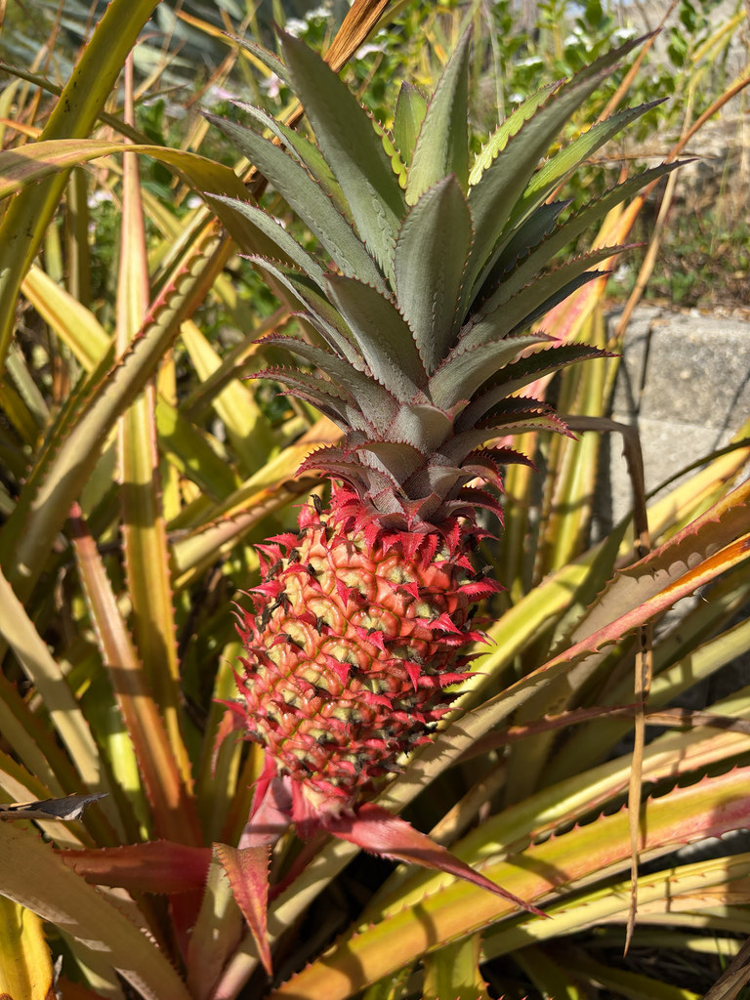

- A pineapple is not one fruit but many — dozens of separate flowers fused together into a single juicy mass.
- It is a bromeliad, a cousin of Spanish moss and the air plants that perch in Florida's oak trees.
- It takes its time: a plant needs about two years to produce one fruit.
- The enzyme bromelain in fresh pineapple actually digests protein — which is why fresh pineapple can make your tongue tingle.
Native to South America, likely the Paraná-Paraguay River region of Brazil and Paraguay. Carried across the tropics by early peoples and now grown worldwide; it thrives in warm, frost-free Florida.
- Before it was a grocery-store staple, the pineapple was one of Europe's most coveted luxury objects. After Columbus carried the fruit to Spain, a single pineapple in 17th- and 18th-century Britain could cost the equivalent of thousands of dollars today — far too precious to slice open.
- Hosts placed them as centerpieces on dining tables simply to be admired, and a rental market sprang up so that those outside the aristocracy could hire a pineapple by the evening to display their status.
- There is a Florida twist hiding in the family tree. Pineapple's wild cousins — the native airplants and Spanish moss draped through Florida's oaks — are under siege from the "evil weevil" (the Mexican bromeliad weevil), an invasive beetle that arrived on imported bromeliads in 1989 and has killed off native bromeliads across the state; several Florida airplants are now listed as endangered.
- The weevil will even bore into a pineapple.
- The crown of leaves topping every fruit is not just decorative — it is a ready-made cutting. Twist it free, let the base dry for a day or two, then root it in water or plant it directly in fast-draining soil. In frost-free Florida it can go straight into the ground; elsewhere it makes a striking container plant, though fruiting still takes the better part of two years even under ideal conditions.
The tubular flowers can attract hummingbirds and bees in bloom. The spiny rosette offers some ground-level cover, and ripe fruit draws insects and small animals.
A low, ground-dwelling rosette of stiff, sword-shaped leaves, often spiny-edged.
Many small purple-blue flowers on a central spike, fusing into the fruit.
The familiar multiple fruit — fused, juicy, golden inside — topped with a leafy crown.
Long, narrow, rigid, gray-green, in a spreading rosette.
Vegetative (months 1–14): a dense, arching ground rosette of rigid sword-shaped leaves with sharp, saw-toothed margins — no stalk yet. In bloom (around months 15–18): look deep into the center for a stout stalk rising up, bearing a cone-like cluster of small purple-blue flowers opening a few at a time from the bottom up.
Fruiting (months 18–24): the classic green-to-golden multiple fruit swells on that central stalk, crowned with its own miniature tuft of leaves.
The fruit is edible and widely eaten fresh, cooked, or juiced. Fresh pineapple contains bromelain, which can irritate the mouth or lips if you eat a lot at once — not dangerous, just tingly.
Not toxic to dogs (ASPCA lists it as non-toxic), but the tough fibrous core and the spiny leaves can cause stomach upset or injury if a dog chews on them.


- © Austin Sibrian (CC-BY-NC), via iNaturalist
- © Maria Escobar (CC-BY-NC), via iNaturalist
- © Lilah Thomas (CC-BY-NC), via iNaturalist
- © Denise Sosa (CC-BY-NC), via iNaturalist